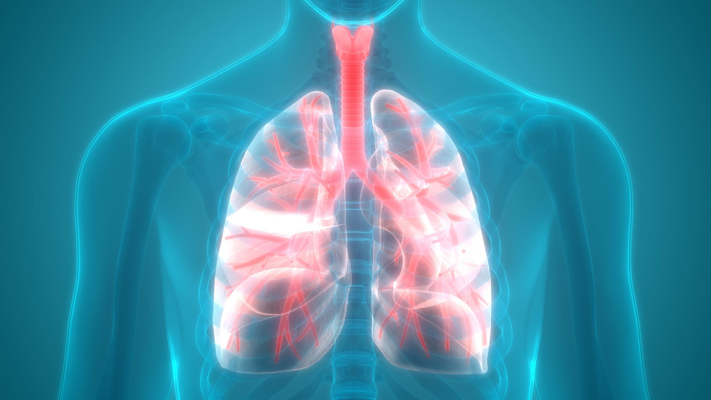

 <center><link rel="shortcut icon" href="logoK@2x"></center>
<!doctype html><html lang="ru">
<!-- Copied from https://www.natgeotv.com/ru by Cyotek WebCopy 1.8.0.652, 15 февраля 2021 г., 18:19:15 --><head><meta charset="utf-8"><meta http-equiv="X-UA-Compatible" content="IE=edge"><!-- BEGIN META TAGS --><title>Главная - Bioverse</title><meta name="title" content="Официальный сайт WorldWide CDI Organization="description" content="Смотрите лучшие программы, документальные фильмы, сериалы, программу передач, описание серий, эксклюзивные видео, фото и многое другое. Расследования авиакатастроф, истории о боге, дикий тунец, марс, космос, мегасооружения, гений, месяц больших кошек, месяц акул"><meta name="keywords" content="National Geographic Channel, Nat Geo, Nat Geo Wild, Nat Geo Wild HD, Nat Geo People, national geographic, nat geo, нет гео, nat geo wild, уайлд, тв, телевидене, телеканал, природа, космос, наука, канал, epg, программа передач, schedule, телегид, netgeotv.com/ru, сериал, программа, видео, документальное, эпизоды, серии, фото, расследования авиакатастроф, осушить океан, гений, истории о боге, марс, месяц больших кошек, авто S.O.S, космос"><meta property="og:title" content="Официальный сайт телеканала National Geographic в России"><meta property="og:description" content="Смотрите лучшие программы, документальные фильмы, сериалы, программу передач, описание серий, эксклюзивные видео, фото и многое другое. Расследования авиакатастроф, истории о боге, дикий тунец, марс, космос, мегасооружения, гений, месяц больших кошек, месяц акул"><meta property="og:url" content="https://www.natgeotv.com/ru"><meta name="author" content="NatGeo TV"><meta name="twitter:card" content="NatGeo TV"><!-- END META TAGS --><!-- Header generic scripts --><meta name="google-site-verification" content="ZtqDat8ppK7LnjUkHBRqknsd9sgTeDySSX4DnyV7prw"><!-- OneTrust Cookies Consent Notice start for natgeotv.com/ru --><script src="scripttemplates/otSDKStub.js" data-language="ru" type="text/javascript" charset="UTF-8" data-domain-script="ad479448-e11c-4d09-9ee8-2b6397ca77d6"></script><script type="text/javascript">
function OptanonWrapper() {window.dataLayer = window.dataLayer || [];
window.dataLayer.push({
 'event': 'OT_loaded'
 });  }
</script><!-- OneTrust Cookies Consent Notice end for natgeotv.com/ru --><script async="" src="tag/js/gpt.js"></script><script>
    window.googletag = window.googletag || {cmd: []};
    var size970 = 0;
    var size728 = 0;
    var size320 = 0;
    var size300 = 0;
        function getPosByScreenWidth(adSlotId,pos = ''){
        const WIDTH_DESKTOP = 1280;
        const WIDTH_TABLET = 1024;
        const WIDTH_MOBILE = 768;
         var posUpdated;
         var posSplited = pos.split('_');
         var posWithoutSize = [];
         for (i = 0; i < (posSplited.length)-1; i++) {
             posWithoutSize.push(posSplited[i]);
         }
         var windowWidth = window.innerWidth;
         posUpdated = posWithoutSize.toString();
        switch (adSlotId) {
            case 'push-top':
                if (windowWidth >= WIDTH_MOBILE  ){
                    size728++;
                    posUpdated = size728;
                }
                if (windowWidth < WIDTH_MOBILE){
                    size320++;
                    posUpdated = size320;
                }
                break;
             case 'push':
                 if (windowWidth >= WIDTH_DESKTOP){
                     size970++;
                     posUpdated = size970;
                 }
                 if (windowWidth >= WIDTH_TABLET && windowWidth < WIDTH_DESKTOP ){
                     size728++;
                     posUpdated = size728;
                 }
                 if (windowWidth >= WIDTH_MOBILE && windowWidth < WIDTH_TABLET){
                     size300++;
                     posUpdated = size300;
                 }
                 if (windowWidth < WIDTH_MOBILE){
                     size320++;
                     posUpdated = size320;
                 }
                 break;
             case 'standard':
                 if (windowWidth >= WIDTH_TABLET  ){
                     size728++;
                     posUpdated = size728;
                 }
                 if (windowWidth >= WIDTH_MOBILE && windowWidth < WIDTH_TABLET){
                     size300++;
                     posUpdated = size300;
                 }
                 if (windowWidth < WIDTH_MOBILE){
                     size320++;
                     posUpdated = size320;
                 }
                 break;
             case 'box':
                 size300++;
                 posUpdated = size300;
                 break;
            default:
                if (windowWidth >= WIDTH_TABLET  ){
                    size728++;
                    posUpdated = size728;
                }
                if (windowWidth >= WIDTH_MOBILE && windowWidth < WIDTH_TABLET){
                    size300++;
                    posUpdated = size300;
                }
                if (windowWidth < WIDTH_MOBILE){
                    size320++;
                    posUpdated = size320;
                }
                break;
        }
        return posUpdated;
    }
    googletag.cmd.push(function () {
        var REFRESH_KEY = 'refresh';
        var REFRESH_VALUE = 'true';
                var posUpdated = getPosByScreenWidth('standard','/21783347309/natgeo/natgeotv.com.ru/web/homepage_[728x90]');
var mapping =  googletag.sizeMapping().
        addSize([1024,10],[728,90]).
        addSize([768,10],[300,250]).
        addSize([0,0],[320,50]).
build();
var adSlot = googletag.defineSlot('/21783347309/natgeo/natgeotv.com.ru/web/homepage', [[728,90],[300,250],[320,50]], 'standard')
//for lazyloading until viewport reached
.setTargeting(REFRESH_KEY, REFRESH_VALUE)
//Other key values
         .setTargeting('objid', 'NG_TV_CH_RU_home')
             .setTargeting('ed', 'ru')
             .setTargeting('lang', 'ru')
             .setTargeting('plt', 'web')
        
.setTargeting('pos',posUpdated)
.addService(googletag.pubads());
adSlot.defineSizeMapping(mapping);
        
        // Number of seconds to wait after the slot becomes viewable.
        var SECONDS_TO_WAIT_AFTER_VIEWABILITY = 18;
        var ONETRUST_GROUP = 'C0004';
        var COOKIES_NON_GDPR = false;
        if (COOKIES_NON_GDPR) {
            googletag.pubads().setRequestNonPersonalizedAds(0);
        } else {
            if (typeof (OnetrustActiveGroups) != 'undefined') {
                if (OnetrustActiveGroups.indexOf(',' + ONETRUST_GROUP + ',') == -1) { // Targeting
                    console.info('Ads -- No Targeting');
                    googletag.pubads().setRequestNonPersonalizedAds(1);
                } else {
                    console.info('Ads -- Allow Targeting');
                    googletag.pubads().setRequestNonPersonalizedAds(0);
                }
            }
        }
        console.log('GPT loading');
        var previousSlot;
        var timer;
        // googletag.pubads().setTargeting("topic","basketball"); //key value example for all slots in the page
        googletag.pubads().addEventListener('impressionViewable', function (event) {
            console.log('impression');
            var slot = event.slot;
            var posUpdated;
            if (previousSlot !== undefined) {
                if (slot.getSlotId().getId() === previousSlot.getSlotId().getId()) {
                    clearTimeout(timer);
                    console.log('clear timer');
                }
            }
            previousSlot = event.slot;
            console.log('Impression for slot', slot.getSlotElementId(), 'became viewable.');
            if (slot.getTargeting(REFRESH_KEY).indexOf(REFRESH_VALUE) > -1) {
                 timer = setTimeout(function () {
                    console.log('Refreshing slot', slot.getSlotElementId());
                   /* posUpdated = getPosByScreenWidth(slot.getSlotElementId(),slot.getTargeting('pos')[0]);
                    slot.setTargeting('pos',posUpdated);*/
                    googletag.pubads().refresh([slot]);
                }, SECONDS_TO_WAIT_AFTER_VIEWABILITY * 1000);
            }
        });
        googletag.pubads().enableSingleRequest();
        googletag.pubads().enableLazyLoad();
        googletag.enableServices();
    });
    window.addEventListener("orientationchange", function(event) {
        var posUpdated = '';
        size970 = 0;
        size728 = 0;
        size320 = 0;
        size300 = 0;
        var slots = googletag.pubads().getSlots();
        console.log('slotes',slots);
        console.log('lenght',slots.length);
        setTimeout(function () {
            slots.forEach(slot => {
                console.log('elementID',slot.getSlotElementId());
                console.log('pos',slot.getTargeting('pos')[0]);
                posUpdated = getPosByScreenWidth(slot.getSlotElementId(), slot.getTargeting('pos')[0]);
                slot.setTargeting('pos', posUpdated);
                googletag.pubads().refresh([slot]);
            });
        }, 50);
    });
</script><script>
    //used by freewheel page ads
    var _fw_key_values = '';
</script><!-- Product region specific css files --><link rel="stylesheet" type="text/css" href="https://cloud.typography.com/7177874/7534772/css/fonts.css"><link rel="stylesheet" type="text/css" href="css.css?family=Roboto:300,100&subset=latin,greek,greek-ext,cyrillic,cyrillic-ext,latin-ext"><link rel="stylesheet" href="compiled/css/product_region_asset_natgeo.css?1613050644"><link rel="shortcut icon" href="assets/natgeo/images/misc/favicon.ico?1613050644"><link rel="apple-touch-icon" href="assets/natgeo/images/misc/apple-touch-icon.png?1613050644"><!--Responsive viewport--><meta name="viewport" content="width=device-width, initial-scale=0.0, minimum-scale=1.0, maximum-scale=1.0"><!-- Inline css --><style type="text/css">.schedule #mainHeader {
    position: fixed;
    width: 100%;
    z-index: 99999;
}
.v7857 #playerContent #overlayChannel img{display:none}
.pgRating span{ display:none}
@media only screen and (min-width: 64.000em) {
.showPage.s896 .sub-nav h1{ font-size:32px}
}
@media only screen and (max-width: 63.938em){
.showPage .videoShow #mainHighlight h1{ font-size:18px}
}
#Newsletter {
   display:flow-root !important;
}
#mainFooter #ot-sdk-btn.ot-sdk-show-settings {
    color: #898989;
    border: none;
    text-decoration: underline;
    background: none;
    padding: 0;
    font-size: 12px;
    line-height: 1;
}
#mainFooter #ot-sdk-btn.ot-sdk-show-settings:hover {
color: #fc0 ;
}</style><script src="ajax/libs/jquery/2.1.4/jquery.min.js"></script><script src="ng/global/js/age-verification.js" async=""></script></head><body class="home natgeo_ru sire_ru" data-cookie-path="/ru"><!--[if lt IE 10]><div class="browserupgrade" id="acilia-browser-detection-box-dialog"><a href="#" class="closeBrowser" id="acilia-browser-detection-close-box-dialog"></a><div class="browCont"><p class="alertBrow"><svg class="vector icoAlertVector" ><use xmlns:xlink="http://www.w3.org/1999/xlink" xlink:href="/assets/images/icons.svg?1613050644#Alert"></use></svg></p><p class="Browtext">Вы используете <span>outdated</span> браузер. Пожалуйста <a href="http://browsehappy.com/" target="_blank">обновите свой браузер</a> для улучшения работы</p></div></div><![endif]--><div id="st-container" class="st-container"><nav class="st-menu st-effect-1" id="menu-1"><div class="closeMenu" id="btnCloseMenu"><svg class="vector icoMenuVector menu noSmall" id="btnCloseMenu"></use></svg></div><ul><li><a href="ru.html" class="firstMenu">Главная страница</a></li><li><a href="ru/shows.html" class="firstMenu">Статьи</a></li><li><a href="ru/schedule/natgeo.html" class="firstMenu">Программы</a></li><li id="howMenu"><ol><li><a href="https://cdi-communities.fandom.com/ru/wiki/Заглавная?useskin=oasis">Справочный центр</a></h3></li><svg class="vector smallSize natGeo"><useru/shows/natgeo/europe-from-above.html xmlns:xlink="http://www.w3.org/1999/xlink" xlink:href="/assets/images/logos.svg?1613050644#natGeo16"></use></svg></li><li><svg class="vector smallSize natGeoWild"><use xmlns:xlink="http://www.w3.org/1999/xlink" xlink:href="/assets/images/logos.svg?1613050644#natGeoWild"></use></svg></li></ol></a></li></ol></li><li><hr><li><a href="https://wwco-org.github.io/w/ru/about/contact/" class="firstMenu">Свяжитесь с нами</a></li><li><a href="ru/schedule/natgeo.html" class="firstMenu">Владелец журнала</a></li><li><a href="https://cdi-communities.fandom.com/ru/wiki/Условия_использования?useskin=oasis" class="firstMenu">Условия использования</a></li><li><a href="https://wwco-org.github.io/w/ru/privacy-policy/index.htm" class="firstMenu">Политика конфиденциальности</a></li></a></li></ul></nav><div class="st-pusher"><div class="st-content"><div class="st-content-inner"><div class="main clearfix"><header id="mainHeader" data-magellan-expedition="fixed" data-options="threshold:1;"><div class="row relative"><div id="st-trigger-effects" class="left"><button data-effect="st-effect-1" id="menuBtn"><svg class="vector icoMenuVector"><use xmlns:xlink="http://www.w3.org/1999/xlink" xlink:href="/assets/images/icons.svg?1613050644#menuNat"></use></svg></button></div><center><div>  </div></svg></a></div></header><aside id="verifiedBar" style="display: none;" class="acilia-verfiedBar-newsletter"><div class="accordionContent3 default"><span class="verify"><svg class="vector icoSuccessVector"><use xmlns:xlink="http://www.w3.org/1999/xlink" xlink:href="/assets/images/icons.svg?1613050644#Success"></use></svg><p>Ваш адрес проверен. Теперь вы подписаны на новости NatGeo</p></span><span class="accordionToggle3 right"><svg class="vector icoCloseCircle left"><use xmlns:xlink="http://www.w3.org/1999/xlink" xlink:href="/assets/images/icons.svg?1613050644#closeCircle"></use></svg></span></div></aside><aside id="verifiedBar" style="display: none;" class="acilia-verfiedBar-newsletter-unsubscribed"><div class="accordionContent3 default"><span class="verify"><svg class="vector icoSuccessVector"><use xmlns:xlink="http://www.w3.org/1999/xlink" xlink:href="/assets/images/icons.svg?1613050644#Success"></use></svg><p>Вы отписались от нашей рассылки. Наддемся увидеть вас снова!</p></span><span class="accordionToggle3 right"><svg class="vector icoCloseCircle left"><use xmlns:xlink="http://www.w3.org/1999/xlink" xlink:href="/assets/images/icons.svg?1613050644#closeCircle"></use></svg></span></div></aside><aside id="verifiedBar" style="display: none;" class="acilia-verfiedBar-user-notification"><div class="accordionContent3 default"><span class="verify"><svg class="vector icoSuccessVector"><use xmlns:xlink="http://www.w3.org/1999/xlink" xlink:href="/assets/images/icons.svg?1613050644#Success"></use></svg><p>Your account has been verified! Welcome to 24kitchen! Become a great cook with help of the best chefs and their best recipies.</p></span><span class="accordionToggle3 right"><svg class="vector icoCloseCircle left"><use xmlns:xlink="http://www.w3.org/1999/xlink" xlink:href="/assets/images/icons.svg?1613050644#closeCircle"></use></svg></span></div></aside><div id="mainContainer"><section class="row"><!-- CardType: Featured/NonFeatured --><div class="large-12 columns cardBox natGeoWild customCard  " id="mainCard"><a href="ru/shows/natgeo/europe-from-above.html" class="intrinsic intrinsic169 cards cardBig" id="mainHighlight" title="по воскресеньям в 20:00 МСК" gtm-event="click" gtm-data="{&quot;fngChannel&quot;:null,&quot;fngShowId&quot;:null,&quot;fngEpisodeId&quot;:null,&quot;fngClipId&quot;:null,&quot;fngShowTitle&quot;:null,&quot;fngEpisodeTitle&quot;:null,&quot;fngClipTitle&quot;:null,&quot;fngContentType&quot;:null,&quot;fngSpecialTitle&quot;:&quot;\u041c\u0435\u0441\u044f\u0446 \u0411\u043e\u043b\u044c\u0448\u0438\u0445 \u041a\u043e\u0448\u0435\u043a&quot;,&quot;fngRegion&quot;:&quot;RU&quot;,&quot;fngItemPosition&quot;:&quot;feature_card&quot;,&quot;event&quot;:&quot;modulos_home&quot;}"><div class="label"><b class="channelLogo">Jack Frandsen</b><b class="channelLogo"><svg class="vector  natGeoWild"><use xmlns:xlink="http://www.w3.org/1999/xlink" xlink:href="/assets/images/logos.svg?1613050644#natGeoWild"></use></svg></b><h1>Вирусы и их влияние</h1><h4>Полная история открытий и влияний вирусов</h4></div><picture><!-- Next Gen Images - WEBP --><!--[if IE 9]></audio><![endif]--></picture></a></div></section><section class="row" id="tuneIn"><div class="small-12 columns"><div class="small-12 column noLarge noMedium"><div class="nowOn"><h4>ИНТЕРЕСНАЯ СТАТЬЯ</h4><a href="ru/schedule/natgeo.html" class="link right noLarge noMedium">Jack Frandsen</a></div><ul class="tuneChannels"><li class="small-6 column"><center>Читайте также:</center><span class="channel"><svg class="vector smallSize channel natGeo"><use xmlns:xlink="http://www.w3.org/1999/xlink" xlink:href="/assets/images/logos.svg?1613050644#natGeo16"></use></svg></span><span class="show" id="acilia-mobile-tunein-37"></span></li><li class="small-6 column"><span class="channel"><svg class="vector smallSize channel ngWildHD"><use xmlns:xlink="http://www.w3.org/1999/xlink" xlink:href="/assets/images/logos.svg?1613050644#ngWildHD"></use></svg></span><span class="show" id="acilia-mobile-tunein-39"></span></li></ul></div><div class="medium-12 columns noSmall" id="tuneInList"><div class="channelDrop selected left"><div><span id="acilia-channel-selected" data-id="37"><svg class="vector smallSize channel natGeo"><use xmlns:xlink="http://www.w3.org/1999/xlink" xlink:href="/assets/images/logos.svg?1613050644#natGeo16"></use></svg></span><div class="right"><svg class="vector smallSize icoArrowDown"><use xmlns:xlink="http://www.w3.org/1999/xlink" xlink:href="/assets/images/icons.svg?1613050644#downArrow"></use></svg></div></div><ol class="dropDownBox togg" id="acilia-channel-select"><li style="display:none;"><a href="#" title="National Geographic" data-channel-id="37"><svg class="vector smallSize channel natGeo"><use xmlns:xlink="http://www.w3.org/1999/xlink" xlink:href="/assets/images/logos.svg?1613050644#natGeo16"></use></svg></a></li><li><a href="#" title="National Geographic WILD" data-channel-id="39"><svg class="vector smallSize channel ngWildHD"><use xmlns:xlink="http://www.w3.org/1999/xlink" xlink:href="/assets/images/logos.svg?1613050644#ngWildHD"></use></svg></a></li></ol></div><div class="tuneContent acilia-channel-tunein " data-channel-id="37" id="acilia-channel-tunein-37"><div class="nowOn left relative"><h5>СЕЙЧАС В ЭФИРЕ:</h5><h3>Научные глупости 7<small>(16+)</small></h3></div><a href="ru/schedule/natgeo.html" title="National Geographic"><ul><li data-timestamp="1613359320" data-nowon-text="Научные глупости 7<small>(16+)</small>"><h4><span>06.00</span>Научные глупости 7<small>(16+)</small></h4></li><li data-timestamp="1613361840" data-nowon-text="Авто - SOS 8<small>(16+)</small>"><h4><span>06.20</span>Авто - SOS 8<small>(16+)</small></h4></li><li data-timestamp="1613365080" data-nowon-text="В дикой природе с Беаром Гриллсом<small>(16+)</small>"><h4><span>07.10</span>В дикой природе с Беаром Гриллсом<small>(16+)</small></h4></li><li data-timestamp="1613368020" data-nowon-text="Ледяная дорога<small>(16+)</small>"><h4><span>08.00</span>Ледяная дорога<small>(16+)</small></h4></li><li data-timestamp="1613371200" data-nowon-text="Strippers: Cars For Cash"><h4><span>08.50</span>Strippers: Cars For Cash</h4></li><li data-timestamp="1613374080" data-nowon-text="Суперсооружения Третьего рейха<small>(16+)</small>"><h4><span>09.40</span>Суперсооружения Третьего рейха<small>(16+)</small></h4></li><li data-timestamp="1613377380" data-nowon-text="Экстремальное путешествие: Вторая мировая война<small>(16+)</small>"><h4><span>10.35</span>Экстремальное путешествие: Вторая мировая война<small>(16+)</small></h4></li><li data-timestamp="1613380440" data-nowon-text="Дикий тунец: Север против Юга<small>(16+)</small>"><h4><span>11.25</span>Дикий тунец: Север против Юга<small>(16+)</small></h4></li><li data-timestamp="1613383620" data-nowon-text="Европа с высоты птичьего полёта<small>(16+)</small>"><h4><span>12.20</span>Европа с высоты птичьего полёта<small>(16+)</small></h4></li><li data-timestamp="1613386740" data-nowon-text="Авто - SOS 8<small>(16+)</small>"><h4><span>13.10</span>Авто - SOS 8<small>(16+)</small></h4></li><li data-timestamp="1613390160" data-nowon-text="Злоключения за границей: лучшее за 2018 г.<small>(16+)</small>"><h4><span>14.05</span>Злоключения за границей: лучшее за 2018 г.<small>(16+)</small></h4></li><li data-timestamp="1613392980" data-nowon-text="Расследование авиакатастроф<small>(16+)</small>"><h4><span>14.55</span>Расследование авиакатастроф<small>(16+)</small></h4></li><li data-timestamp="1613396400" data-nowon-text="Международный аэропорт Дубай<small>(16+)</small>"><h4><span>15.50</span>Международный аэропорт Дубай<small>(16+)</small></h4></li><li data-timestamp="1613399220" data-nowon-text="Европа с высоты птичьего полёта<small>(16+)</small>"><h4><span>16.40</span>Европа с высоты птичьего полёта<small>(16+)</small></h4></li><li data-timestamp="1613402700" data-nowon-text="Путешествия с Гордоном Рамзи<small>(16+)</small>"><h4><span>17.35</span>Путешествия с Гордоном Рамзи<small>(16+)</small></h4></li><li data-timestamp="1613404140" data-nowon-text="Фабрика еды<small>(16+)</small>"><h4><span>18.25</span>Фабрика еды<small>(16+)</small></h4></li><li data-timestamp="1613405640" data-nowon-text="Фабрика еды<small>(16+)</small>"><h4><span>18.50</span>Фабрика еды<small>(16+)</small></h4></li><li data-timestamp="1613408820" data-nowon-text="Расследование авиакатастроф<small>(16+)</small>"><h4><span>19.20</span>Расследование авиакатастроф<small>(16+)</small></h4></li><li data-timestamp="1613411940" data-nowon-text="Расследование авиакатастроф: Специальный выпуск<small>(16+)</small>"><h4><span>20.10</span>Расследование авиакатастроф: Специальный выпуск<small>(16+)</small></h4></li><li data-timestamp="1613414880" data-nowon-text="Злоключения за границей: лучшее за 2018 г.<small>(18+)</small>"><h4><span>21.00</span>Злоключения за границей: лучшее за 2018 г.<small>(18+)</small></h4></li><li data-timestamp="1613417580" data-nowon-text="КОНТРАБАНДА С МАРИАННОЙ ВАН ЗЕЛЛЕР<small>(16+)</small>"><h4><span>21.50</span>КОНТРАБАНДА С МАРИАННОЙ ВАН ЗЕЛЛЕР<small>(16+)</small></h4></li><li data-timestamp="1613420880" data-nowon-text="Авто - SOS 8<small>(16+)</small>"><h4><span>22.40</span>Авто - SOS 8<small>(16+)</small></h4></li><li data-timestamp="1613423880" data-nowon-text="Игры разума<small>(16+)</small>"><h4><span>23.30</span>Игры разума<small>(16+)</small></h4></li><li data-timestamp="1613426700" data-nowon-text="Расследование авиакатастроф<small>(16+)</small>"><h4><span>00.20</span>Расследование авиакатастроф<small>(16+)</small></h4></li><li data-timestamp="1613429520" data-nowon-text="Осушить океан<small>(16+)</small>"><h4><span>01.05</span>Осушить океан<small>(16+)</small></h4></li><li data-timestamp="1613432340" data-nowon-text="Авто - SOS 8<small>(16+)</small>"><h4><span>01.55</span>Авто - SOS 8<small>(16+)</small></h4></li><li data-timestamp="1613435040" data-nowon-text="Авто - SOS 8<small>(16+)</small>"><h4><span>02.40</span>Авто - SOS 8<small>(16+)</small></h4></li><li data-timestamp="1613437440" data-nowon-text="КОНТРАБАНДА С МАРИАННОЙ ВАН ЗЕЛЛЕР<small>(16+)</small>"><h4><span>03.25</span>КОНТРАБАНДА С МАРИАННОЙ ВАН ЗЕЛЛЕР<small>(16+)</small></h4></li><li data-timestamp="1613440740" data-nowon-text="Осушить океан: глубокое погружение<small>(16+)</small>"><h4><span>04.15</span>Осушить океан: глубокое погружение<small>(16+)</small></h4></li><li data-timestamp="1613443860" data-nowon-text="Международный аэропорт Дубай<small>(16+)</small>"><h4><span>05.05</span>Международный аэропорт Дубай<small>(16+)</small></h4></li><li data-timestamp="1613443020" data-nowon-text="Научные глупости 7<small>(16+)</small>"><h4><span>05.15</span>Научные глупости 7<small>(16+)</small></h4></li></ul></a></div><div class="tuneContent acilia-channel-tunein hide" data-channel-id="39" id="acilia-channel-tunein-39"><div class="nowOn left relative"><h5>СЕЙЧАС В ЭФИРЕ:</h5><h3>Человек против животного<small>(16+)</small></h3></div><a href="ru/schedule/nationalgeographicwild.html" title="National Geographic WILD"><ul><li data-timestamp="1613359260" data-nowon-text="Человек против животного<small>(16+)</small>"><h4><span>06.00</span>Человек против животного<small>(16+)</small></h4></li><li data-timestamp="1613362200" data-nowon-text="Собачий город<small>(16+)</small>"><h4><span>06.20</span>Собачий город<small>(16+)</small></h4></li><li data-timestamp="1613363460" data-nowon-text="Просторы АмерикиПросторы Америки<small>(16+)</small>"><h4><span>07.10</span>Просторы АмерикиПросторы Америки<small>(16+)</small></h4></li><li data-timestamp="1613365260" data-nowon-text="Просторы АмерикиПросторы Америки<small>(16+)</small>"><h4><span>07.40</span>Просторы АмерикиПросторы Америки<small>(16+)</small></h4></li><li data-timestamp="1613368020" data-nowon-text="Рождение прайда<small>(16+)</small>"><h4><span>08.00</span>Рождение прайда<small>(16+)</small></h4></li><li data-timestamp="1613371140" data-nowon-text="Кровавые соперники: гиппопотамы против львов<small>(12+)</small>"><h4><span>08.50</span>Кровавые соперники: гиппопотамы против львов<small>(12+)</small></h4></li><li data-timestamp="1613374380" data-nowon-text="Секреты зоопарка: дикарки, Сборник<small>(16+)</small>"><h4><span>09.45</span>Секреты зоопарка: дикарки, Сборник<small>(16+)</small></h4></li><li data-timestamp="1613377080" data-nowon-text="The Incredible Dr. Pol Compilations"><h4><span>10.35</span>The Incredible Dr. Pol Compilations</h4></li><li data-timestamp="1613380200" data-nowon-text="Рождение прайда<small>(16+)</small>"><h4><span>11.20</span>Рождение прайда<small>(16+)</small></h4></li><li data-timestamp="1613383440" data-nowon-text="Кровавые соперники: гиппопотамы против львов<small>(12+)</small>"><h4><span>12.15</span>Кровавые соперники: гиппопотамы против львов<small>(12+)</small></h4></li><li data-timestamp="1613386380" data-nowon-text="Дикие охотники: смертельно опасные хищники Африки<small>(16+)</small>"><h4><span>13.05</span>Дикие охотники: смертельно опасные хищники Африки<small>(16+)</small></h4></li><li data-timestamp="1613389320" data-nowon-text="Человек против гепард<small>(12+)</small>"><h4><span>13.55</span>Человек против гепард<small>(12+)</small></h4></li><li data-timestamp="1613392440" data-nowon-text="Человек среди гепардов<small>(16+)</small>"><h4><span>14.45</span>Человек среди гепардов<small>(16+)</small></h4></li><li data-timestamp="1613395380" data-nowon-text="Смертоносная Африка<small>(16+)</small>"><h4><span>15.35</span>Смертоносная Африка<small>(16+)</small></h4></li><li data-timestamp="1613398380" data-nowon-text="Смертоносная Африка<small>(16+)</small>"><h4><span>16.25</span>Смертоносная Африка<small>(16+)</small></h4></li><li data-timestamp="1613401740" data-nowon-text="Смертоносная Африка<small>(16+)</small>"><h4><span>17.20</span>Смертоносная Африка<small>(16+)</small></h4></li><li data-timestamp="1613404320" data-nowon-text="The Incredible Dr. Pol Compilations"><h4><span>18.10</span>The Incredible Dr. Pol Compilations</h4></li><li data-timestamp="1613407320" data-nowon-text="Бойцовский клуб для животных, лучшее 2<small>(16+)</small>"><h4><span>18.55</span>Бойцовский клуб для животных, лучшее 2<small>(16+)</small></h4></li><li data-timestamp="1613410680" data-nowon-text="Snakes In The City 7"><h4><span>19.50</span>Snakes In The City 7</h4></li><li data-timestamp="1613413680" data-nowon-text="Человек против гепард<small>(12+)</small>"><h4><span>20.40</span>Человек против гепард<small>(12+)</small></h4></li><li data-timestamp="1613416740" data-nowon-text="Человек среди гепардов<small>(16+)</small>"><h4><span>21.30</span>Человек среди гепардов<small>(16+)</small></h4></li><li data-timestamp="1613419620" data-nowon-text="Snakes In The City 7"><h4><span>22.20</span>Snakes In The City 7</h4></li><li data-timestamp="1613422620" data-nowon-text="The Incredible Dr. Pol 10"><h4><span>23.10</span>The Incredible Dr. Pol 10</h4></li><li data-timestamp="1613425620" data-nowon-text="Ветеринар из Юкона 2<small>(16+)</small>"><h4><span>00.00</span>Ветеринар из Юкона 2<small>(16+)</small></h4></li><li data-timestamp="1613428500" data-nowon-text="Бойцовский клуб для животных, лучшее 2<small>(16+)</small>"><h4><span>00.50</span>Бойцовский клуб для животных, лучшее 2<small>(16+)</small></h4></li><li data-timestamp="1613431140" data-nowon-text="Snakes In The City 7"><h4><span>01.35</span>Snakes In The City 7</h4></li><li data-timestamp="1613433840" data-nowon-text="Человек против гепард<small>(12+)</small>"><h4><span>02.20</span>Человек против гепард<small>(12+)</small></h4></li><li data-timestamp="1613436540" data-nowon-text="Человек среди гепардов<small>(16+)</small>"><h4><span>03.05</span>Человек среди гепардов<small>(16+)</small></h4></li><li data-timestamp="1613439600" data-nowon-text="Смертоносная Африка<small>(16+)</small>"><h4><span>03.55</span>Смертоносная Африка<small>(16+)</small></h4></li><li data-timestamp="1613442360" data-nowon-text="Смертоносная Африка<small>(16+)</small>"><h4><span>04.40</span>Смертоносная Африка<small>(16+)</small></h4></li><li data-timestamp="1613442660" data-nowon-text="Просторы АмерикиПросторы Америки<small>(16+)</small>"><h4><span>05.10</span>Просторы АмерикиПросторы Америки<small>(16+)</small></h4></li><li data-timestamp="1613443860" data-nowon-text="Человек против животного<small>(16+)</small>"><h4><span>05.30</span>Человек против животного<small>(16+)</small></h4></li></ul></a></div></div></div></section><section class="row"><!-- CardType: PrimeTime --><div class="large-6 small-12 columns cardBox natGeo "><a href="ru/shows/natgeo/banged-up-abroad.html" class="intrinsic intrinsic169 cards cardSmall" title="Злоключения за границей: лучшее за 2018 г." gtm-event="click" gtm-data="{&quot;fngChannel&quot;:&quot;National Geographic&quot;,&quot;fngShowId&quot;:&quot;107785&quot;,&quot;fngEpisodeId&quot;:null,&quot;fngClipId&quot;:null,&quot;fngShowTitle&quot;:&quot;\u0417\u043b\u043e\u043a\u043b\u044e\u0447\u0435\u043d\u0438\u044f \u0437\u0430 \u0433\u0440\u0430\u043d\u0438\u0446\u0435\u0439: \u043b\u0443\u0447\u0448\u0435\u0435 \u0437\u0430 2018 \u0433.&quot;,&quot;fngEpisodeTitle&quot;:null,&quot;fngClipTitle&quot;:null,&quot;fngContentType&quot;:&quot;Serie&quot;,&quot;fngSpecialTitle&quot;:null,&quot;fngRegion&quot;:&quot;RU&quot;,&quot;fngItemPosition&quot;:&quot;prime_time_card&quot;,&quot;event&quot;:&quot;modulos_home&quot;}"><div class="label"><b class="channelLogo">Eugene Russell</b><b class="channelLogo"><svg class="vector  natGeo"><use xmlns:xlink="http://www.w3.org/1999/xlink" xlink:href="/assets/images/logos.svg?1613050644#natGeo16"></use></svg></b><h3>Анатомия человека</h3><h4>О строении организма человека</h4></div><picture><!-- Next Gen Images - WEBP --><source data-srcset="//sire-media-ngcru.fichub.com/ng_ru/serie-main/169419.1024x576.webp" media="(min-width: 1024px)" type="image/webp"><source data-srcset="//sire-media-ngcru.fichub.com/ng_ru/serie-main/169419.640x360.webp" media="(min-width: 568px)" type="image/webp"><source data-srcset="//sire-media-ngcru.fichub.com/ng_ru/serie-main/169419.600x338.webp" type="image/webp"><!-- Next Gen Images - JPEG2000 --><source data-srcset="//sire-media-ngcru.fichub.com/ng_ru/serie-main/169419.1024x576.jp2" media="(min-width: 1024px)" type="image/jp2"><source data-srcset="//sire-media-ngcru.fichub.com/ng_ru/serie-main/169419.640x360.jp2" media="(min-width: 568px)" type="image/jp2"><source data-srcset="//sire-media-ngcru.fichub.com/ng_ru/serie-main/169419.600x338.jp2" type="image/jp2"><!--[if IE 9]><audio><![endif]--><source data-srcset="//sire-media-ngcru.fichub.com/ng_ru/serie-main/169419.1024x576.jpg" media="(min-width: 1024px)" type="image/jpeg"><source data-srcset="//sire-media-ngcru.fichub.com/ng_ru/serie-main/169419.640x360.jpg" media="(min-width: 568px)" type="image/jpeg"><source data-srcset="//sire-media-ngcru.fichub.com/ng_ru/serie-main/169419.600x338.jpg" type="image/jpeg"><!--[if IE 9]></audio><![endif]--></picture></a></div><!-- CardType: Featured/NonFeatured --><div class="large-6 small-12 columns cardBox natGeo customCard "><a href="ru/shows/natgeo/europe-from-above.html" class="intrinsic intrinsic169 cards cardSmall" title="Европа с высоты птичьего полёта" gtm-event="click" gtm-data="{&quot;fngChannel&quot;:&quot;National Geographic&quot;,&quot;fngShowId&quot;:&quot;176952&quot;,&quot;fngEpisodeId&quot;:null,&quot;fngClipId&quot;:null,&quot;fngShowTitle&quot;:&quot;\u0415\u0432\u0440\u043e\u043f\u0430 \u0441 \u0432\u044b\u0441\u043e\u0442\u044b \u043f\u0442\u0438\u0447\u044c\u0435\u0433\u043e \u043f\u043e\u043b\u0451\u0442\u0430&quot;,&quot;fngEpisodeTitle&quot;:null,&quot;fngClipTitle&quot;:null,&quot;fngContentType&quot;:&quot;Serie&quot;,&quot;fngSpecialTitle&quot;:null,&quot;fngRegion&quot;:&quot;RU&quot;,&quot;fngItemPosition&quot;:&quot;non_featured_card&quot;,&quot;event&quot;:&quot;modulos_home&quot;}"><div class="label"><b class="channelLogo">National geographic</b><b class="channelLogo"><svg class="vector  natGeo"><use xmlns:xlink="http://www.w3.org/1999/xlink" xlink:href="/assets/images/logos.svg?1613050644#natGeo16"></use></svg></b><h3>Европа с высоты птичьего полёта</h3><h4>по воскресеньям в 21:00 МСК</h4></div><picture><!-- Next Gen Images - WEBP --><source data-srcset="//sire-media-ngcru.fichub.com/ng_ru/card-image/374899.1024x576.webp" media="(min-width: 1024px)" type="image/webp"><source data-srcset="//sire-media-ngcru.fichub.com/ng_ru/card-image/374899.640x360.webp" media="(min-width: 568px)" type="image/webp"><source data-srcset="//sire-media-ngcru.fichub.com/ng_ru/card-image/374899.600x338.webp" type="image/webp"><!-- Next Gen Images - JPEG2000 --><source data-srcset="//sire-media-ngcru.fichub.com/ng_ru/card-image/374899.1024x576.jp2" media="(min-width: 1024px)" type="image/jp2"><source data-srcset="//sire-media-ngcru.fichub.com/ng_ru/card-image/374899.640x360.jp2" media="(min-width: 568px)" type="image/jp2"><source data-srcset="//sire-media-ngcru.fichub.com/ng_ru/card-image/374899.600x338.jp2" type="image/jp2"><!--[if IE 9]><audio><![endif]--><source data-srcset="//sire-media-ngcru.fichub.com/ng_ru/card-image/374899.1024x576.jpg" media="(min-width: 1024px)" type="image/jpeg"><source data-srcset="//sire-media-ngcru.fichub.com/ng_ru/card-image/374899.640x360.jpg" media="(min-width: 568px)" type="image/jpeg"><source data-srcset="//sire-media-ngcru.fichub.com/ng_ru/card-image/374899.600x338.jpg" type="image/jpeg"><!--[if IE 9]></audio><![endif]--></picture></a></div></section><section class="row"><!-- CardType: Featured/NonFeatured --><div class="large-12 columns cardBox natGeo customCard "><a href="ru/shows/natgeo/narco-wars.html" class="intrinsic intrinsic169 cards cardBig natGeo customCard" title="Нарковойны" gtm-event="click" gtm-data="{&quot;fngChannel&quot;:&quot;National Geographic&quot;,&quot;fngShowId&quot;:&quot;192391&quot;,&quot;fngEpisodeId&quot;:null,&quot;fngClipId&quot;:null,&quot;fngShowTitle&quot;:&quot;\u041d\u0430\u0440\u043a\u043e\u0432\u043e\u0439\u043d\u044b&quot;,&quot;fngEpisodeTitle&quot;:null,&quot;fngClipTitle&quot;:null,&quot;fngContentType&quot;:&quot;Serie&quot;,&quot;fngSpecialTitle&quot;:null,&quot;fngRegion&quot;:&quot;RU&quot;,&quot;fngItemPosition&quot;:&quot;non_featured_card&quot;,&quot;event&quot;:&quot;modulos_home&quot;}"><div class="label"><b class="channelLogo">National geographic</b><b class="channelLogo"><svg class="vector  natGeo"><use xmlns:xlink="http://www.w3.org/1999/xlink" xlink:href="/assets/images/logos.svg?1613050644#natGeo16"></use></svg></b><h3>Нарковойны</h3><h4>по вторникам в 21:00 МСК</h4></div><picture><!-- Next Gen Images - WEBP --><source data-srcset="//sire-media-ngcru.fichub.com/ng_ru/card-image/374239.1200x675.webp" media="(min-width: 1024px)" type="image/webp"><source data-srcset="//sire-media-ngcru.fichub.com/ng_ru/card-image/374239.1024x576.webp" media="(min-width: 568px)" type="image/webp"><source data-srcset="//sire-media-ngcru.fichub.com/ng_ru/card-image/374239.640x360.webp" type="image/webp"><!-- Next Gen Images - JPEG2000 --><source data-srcset="//sire-media-ngcru.fichub.com/ng_ru/card-image/374239.1200x675.jp2" media="(min-width: 1024px)" type="image/jp2"><source data-srcset="//sire-media-ngcru.fichub.com/ng_ru/card-image/374239.1024x576.jp2" media="(min-width: 568px)" type="image/jp2"><source data-srcset="//sire-media-ngcru.fichub.com/ng_ru/card-image/374239.640x360.jp2" type="image/jp2"><!--[if IE 9]><audio><![endif]--><source data-srcset="//sire-media-ngcru.fichub.com/ng_ru/card-image/374239.1200x675.jpg" media="(min-width: 1024px)" type="image/jpeg"><source data-srcset="//sire-media-ngcru.fichub.com/ng_ru/card-image/374239.1024x576.jpg" media="(min-width: 568px)" type="image/jpeg"><source data-srcset="//sire-media-ngcru.fichub.com/ng_ru/card-image/374239.640x360.jpg" type="image/jpeg"><!--[if IE 9]></audio><![endif]--></picture></a></div><aside class="large-12 columns cardBox"><div id="Newsletter" class=" NewsletterBanner"><div class="newsContent"><h5 id="acilia-h5-news">Подписаться на новости</h5><form id="acilia-form-news" action="/ru/_newsletter_add_subcriptor" method="post" data-api="yes"><input type="email" name="email" id="acilia-form-news-email" class="small-8 column newsInput" required="" placeholder="Ваш электронный адрес"><label id="acilia-form-not-eligible-error" class="error" style="display: none">Sorry, you aren&#039;t eligible for this offer</label><label class="error email-address-error" style="display: none">Пожалуйста, введите действительный адрес</label><label id="email-terms-error" class="error" style="display: none">Вам нужно принять условия использования</label><div class="show_hide"><fieldset><div class="checkStyle"><input data-api="yes" type="checkbox" value="1" id="acilia-form-news-privacy" name="privacy" class="acilia-form-news-privacy" required="required"><label for="acilia-form-news-privacy"></label></div><label class="acilia-newsletter-privacy" for="acilia-form-news-privacy">Я прочитал и согласен с <a href="ru/info/terms-and-condicions.html" title="" target="_blank">Условиями</a> и Политикой <a href="ru/info/privacy-policy.html" title="" target="_blank">конфиденциальности</a></label><label id="acilia-form-news-privacy-error" class="error" style="display: none">необходимые</label></fieldset></div><a href="#" id="acilia-form-news-btn" title="" class="go mobile">Подписаться на новости</a></form><div class="advice alert" id="acilia-newsletter-alert" style="display: none;"><span class="sb-icon-advice"><svg class="vector icoAlertVector"><use xmlns:xlink="http://www.w3.org/1999/xlink" xlink:href="/assets/images/icons.svg?1613050644#Alert"></use></svg></span><h2>Пожалуйста, проверьте почту, включая папку Спам.</h2></div></div></div></aside><!-- CardType: Featured/NonFeatured --><div class="large-6 small-12 columns cardBox natGeoWild customCard "><a href="ru/shows/nationalgeographicwild/the-incredible-dr-pol.html" class="intrinsic intrinsic169 cards cardSmall" title="Невероятный доктор Пол" gtm-event="click" gtm-data="{&quot;fngChannel&quot;:&quot;National Geographic WILD&quot;,&quot;fngShowId&quot;:&quot;110316&quot;,&quot;fngEpisodeId&quot;:null,&quot;fngClipId&quot;:null,&quot;fngShowTitle&quot;:&quot;\u041d\u0435\u0432\u0435\u0440\u043e\u044f\u0442\u043d\u044b\u0439 \u0434\u043e\u043a\u0442\u043e\u0440 \u041f\u043e\u043b&quot;,&quot;fngEpisodeTitle&quot;:null,&quot;fngClipTitle&quot;:null,&quot;fngContentType&quot;:&quot;Serie&quot;,&quot;fngSpecialTitle&quot;:null,&quot;fngRegion&quot;:&quot;RU&quot;,&quot;fngItemPosition&quot;:&quot;non_featured_card&quot;,&quot;event&quot;:&quot;modulos_home&quot;}"><div class="label"><b class="channelLogo">National geographic wild</b><b class="channelLogo"><svg class="vector  natGeoWild"><use xmlns:xlink="http://www.w3.org/1999/xlink" xlink:href="/assets/images/logos.svg?1613050644#natGeoWild"></use></svg></b><h3>Невероятный доктор Пол</h3><h4>по понедельникам в 23:15 МСК</h4></div><picture><!-- Next Gen Images - WEBP --><source data-srcset="//sire-media-ngcru.fichub.com/ng_ru/card-image/374241.1024x576.webp" media="(min-width: 1024px)" type="image/webp"><source data-srcset="//sire-media-ngcru.fichub.com/ng_ru/card-image/374241.640x360.webp" media="(min-width: 568px)" type="image/webp"><source data-srcset="//sire-media-ngcru.fichub.com/ng_ru/card-image/374241.600x338.webp" type="image/webp"><!-- Next Gen Images - JPEG2000 --><source data-srcset="//sire-media-ngcru.fichub.com/ng_ru/card-image/374241.1024x576.jp2" media="(min-width: 1024px)" type="image/jp2"><source data-srcset="//sire-media-ngcru.fichub.com/ng_ru/card-image/374241.640x360.jp2" media="(min-width: 568px)" type="image/jp2"><source data-srcset="//sire-media-ngcru.fichub.com/ng_ru/card-image/374241.600x338.jp2" type="image/jp2"><!--[if IE 9]><audio><![endif]--><source data-srcset="//sire-media-ngcru.fichub.com/ng_ru/card-image/374241.1024x576.jpg" media="(min-width: 1024px)" type="image/jpeg"><source data-srcset="//sire-media-ngcru.fichub.com/ng_ru/card-image/374241.640x360.jpg" media="(min-width: 568px)" type="image/jpeg"><source data-srcset="//sire-media-ngcru.fichub.com/ng_ru/card-image/374241.600x338.jpg" type="image/jpeg"><!--[if IE 9]></audio><![endif]--></picture></a></div><!-- CardType: Featured/NonFeatured --><div class="large-6 small-12 columns cardBox natGeo customCard "><a href="ru/shows/natgeo/trafficked-with-mariana-van-zeller.html" class="intrinsic intrinsic169 cards cardSmall" title="Контрабанда с Марианной Ван Зеллер" gtm-event="click" gtm-data="{&quot;fngChannel&quot;:&quot;National Geographic&quot;,&quot;fngShowId&quot;:&quot;186896&quot;,&quot;fngEpisodeId&quot;:null,&quot;fngClipId&quot;:null,&quot;fngShowTitle&quot;:&quot;\u041a\u041e\u041d\u0422\u0420\u0410\u0411\u0410\u041d\u0414\u0410 \u0421 \u041c\u0410\u0420\u0418\u0410\u041d\u041d\u041e\u0419 \u0412\u0410\u041d \u0417\u0415\u041b\u041b\u0415\u0420&quot;,&quot;fngEpisodeTitle&quot;:null,&quot;fngClipTitle&quot;:null,&quot;fngContentType&quot;:&quot;Serie&quot;,&quot;fngSpecialTitle&quot;:null,&quot;fngRegion&quot;:&quot;RU&quot;,&quot;fngItemPosition&quot;:&quot;non_featured_card&quot;,&quot;event&quot;:&quot;modulos_home&quot;}"><div class="label"><b class="channelLogo">National geographic</b><b class="channelLogo"><svg class="vector  natGeo"><use xmlns:xlink="http://www.w3.org/1999/xlink" xlink:href="/assets/images/logos.svg?1613050644#natGeo16"></use></svg></b><h3>Контрабанда с Марианной Ван Зеллер</h3><h4>по понедельникам в 21:50 МСК</h4></div><picture><!-- Next Gen Images - WEBP --><source data-srcset="//sire-media-ngcru.fichub.com/ng_ru/card-image/374242.1024x576.webp" media="(min-width: 1024px)" type="image/webp"><source data-srcset="//sire-media-ngcru.fichub.com/ng_ru/card-image/374242.640x360.webp" media="(min-width: 568px)" type="image/webp"><source data-srcset="//sire-media-ngcru.fichub.com/ng_ru/card-image/374242.600x338.webp" type="image/webp"><!-- Next Gen Images - JPEG2000 --><source data-srcset="//sire-media-ngcru.fichub.com/ng_ru/card-image/374242.1024x576.jp2" media="(min-width: 1024px)" type="image/jp2"><source data-srcset="//sire-media-ngcru.fichub.com/ng_ru/card-image/374242.640x360.jp2" media="(min-width: 568px)" type="image/jp2"><source data-srcset="//sire-media-ngcru.fichub.com/ng_ru/card-image/374242.600x338.jp2" type="image/jp2"><!--[if IE 9]><audio><![endif]--><source data-srcset="//sire-media-ngcru.fichub.com/ng_ru/card-image/374242.1024x576.jpg" media="(min-width: 1024px)" type="image/jpeg"><source data-srcset="//sire-media-ngcru.fichub.com/ng_ru/card-image/374242.640x360.jpg" media="(min-width: 568px)" type="image/jpeg"><source data-srcset="//sire-media-ngcru.fichub.com/ng_ru/card-image/374242.600x338.jpg" type="image/jpeg"><!--[if IE 9]></audio><![endif]--></picture></a></div><!-- CardType: Featured/NonFeatured --><div class="large-6 small-12 columns cardBox natGeo customCard "><a href="ru/shows/natgeo/air-crash-investigation-special-report.html" class="intrinsic intrinsic169 cards cardSmall" title="Расследование авиакатастроф: Специальный выпуск 4" gtm-event="click" gtm-data="{&quot;fngChannel&quot;:&quot;National Geographic&quot;,&quot;fngShowId&quot;:&quot;108170&quot;,&quot;fngEpisodeId&quot;:null,&quot;fngClipId&quot;:null,&quot;fngShowTitle&quot;:&quot;\u0420\u0430\u0441\u0441\u043b\u0435\u0434\u043e\u0432\u0430\u043d\u0438\u0435 \u0430\u0432\u0438\u0430\u043a\u0430\u0442\u0430\u0441\u0442\u0440\u043e\u0444: \u0421\u043f\u0435\u0446\u0438\u0430\u043b\u044c\u043d\u044b\u0439 \u0432\u044b\u043f\u0443\u0441\u043a&quot;,&quot;fngEpisodeTitle&quot;:null,&quot;fngClipTitle&quot;:null,&quot;fngContentType&quot;:&quot;Serie&quot;,&quot;fngSpecialTitle&quot;:null,&quot;fngRegion&quot;:&quot;RU&quot;,&quot;fngItemPosition&quot;:&quot;non_featured_card&quot;,&quot;event&quot;:&quot;modulos_home&quot;}"><div class="label"><b class="channelLogo">National geographic</b><b class="channelLogo"><svg class="vector  natGeo"><use xmlns:xlink="http://www.w3.org/1999/xlink" xlink:href="/assets/images/logos.svg?1613050644#natGeo16"></use></svg></b><h3>Расследование авиакатастроф: Специальный выпуск 4</h3><h4>по четвергам 21:00</h4></div><picture><!-- Next Gen Images - WEBP --><source data-srcset="//sire-media-ngcru.fichub.com/ng_ru/card-image/374243.1024x576.webp" media="(min-width: 1024px)" type="image/webp"><source data-srcset="//sire-media-ngcru.fichub.com/ng_ru/card-image/374243.640x360.webp" media="(min-width: 568px)" type="image/webp"><source data-srcset="//sire-media-ngcru.fichub.com/ng_ru/card-image/374243.600x338.webp" type="image/webp"><!-- Next Gen Images - JPEG2000 --><source data-srcset="//sire-media-ngcru.fichub.com/ng_ru/card-image/374243.1024x576.jp2" media="(min-width: 1024px)" type="image/jp2"><source data-srcset="//sire-media-ngcru.fichub.com/ng_ru/card-image/374243.640x360.jp2" media="(min-width: 568px)" type="image/jp2"><source data-srcset="//sire-media-ngcru.fichub.com/ng_ru/card-image/374243.600x338.jp2" type="image/jp2"><!--[if IE 9]><audio><![endif]--><source data-srcset="//sire-media-ngcru.fichub.com/ng_ru/card-image/374243.1024x576.jpg" media="(min-width: 1024px)" type="image/jpeg"><source data-srcset="//sire-media-ngcru.fichub.com/ng_ru/card-image/374243.640x360.jpg" media="(min-width: 568px)" type="image/jpeg"><source data-srcset="//sire-media-ngcru.fichub.com/ng_ru/card-image/374243.600x338.jpg" type="image/jpeg"><!--[if IE 9]></audio><![endif]--></picture></a></div><!-- CardType: Featured/NonFeatured --><div class="large-6 small-12 columns cardBox natGeoWild customCard "><a href="ru/shows/nationalgeographicwild/snakes-in-the-city.html" class="intrinsic intrinsic169 cards cardSmall" title="Змеи в городе 7" gtm-event="click" gtm-data="{&quot;fngChannel&quot;:&quot;National Geographic WILD&quot;,&quot;fngShowId&quot;:&quot;108173&quot;,&quot;fngEpisodeId&quot;:null,&quot;fngClipId&quot;:null,&quot;fngShowTitle&quot;:&quot;\u0417\u043c\u0435\u0438 \u0432 \u0433\u043e\u0440\u043e\u0434\u0435 5&quot;,&quot;fngEpisodeTitle&quot;:null,&quot;fngClipTitle&quot;:null,&quot;fngContentType&quot;:&quot;Serie&quot;,&quot;fngSpecialTitle&quot;:null,&quot;fngRegion&quot;:&quot;RU&quot;,&quot;fngItemPosition&quot;:&quot;non_featured_card&quot;,&quot;event&quot;:&quot;modulos_home&quot;}"><div class="label"><b class="channelLogo">National geographic wild</b><b class="channelLogo"><svg class="vector  natGeoWild"><use xmlns:xlink="http://www.w3.org/1999/xlink" xlink:href="/assets/images/logos.svg?1613050644#natGeoWild"></use></svg></b><h3>Змеи в городе 7</h3><h4>по понедельникам в 20:00 МСК</h4></div><picture><!-- Next Gen Images - WEBP --><source data-srcset="//sire-media-ngcru.fichub.com/ng_ru/card-image/374244.1024x576.webp" media="(min-width: 1024px)" type="image/webp"><source data-srcset="//sire-media-ngcru.fichub.com/ng_ru/card-image/374244.640x360.webp" media="(min-width: 568px)" type="image/webp"><source data-srcset="//sire-media-ngcru.fichub.com/ng_ru/card-image/374244.600x338.webp" type="image/webp"><!-- Next Gen Images - JPEG2000 --><source data-srcset="//sire-media-ngcru.fichub.com/ng_ru/card-image/374244.1024x576.jp2" media="(min-width: 1024px)" type="image/jp2"><source data-srcset="//sire-media-ngcru.fichub.com/ng_ru/card-image/374244.640x360.jp2" media="(min-width: 568px)" type="image/jp2"><source data-srcset="//sire-media-ngcru.fichub.com/ng_ru/card-image/374244.600x338.jp2" type="image/jp2"><!--[if IE 9]><audio><![endif]--><source data-srcset="//sire-media-ngcru.fichub.com/ng_ru/card-image/374244.1024x576.jpg" media="(min-width: 1024px)" type="image/jpeg"><source data-srcset="//sire-media-ngcru.fichub.com/ng_ru/card-image/374244.640x360.jpg" media="(min-width: 568px)" type="image/jpeg"><source data-srcset="//sire-media-ngcru.fichub.com/ng_ru/card-image/374244.600x338.jpg" type="image/jpeg"><!--[if IE 9]></audio><![endif]--></picture></a></div></section><!-- Block has Ads --><!-- GAM standard --><aside class="row adBlock"><div class="large-12 columns"><div class="ad"><!-- Slot Definition --><div id="standard"><script>
                    googletag.cmd.push(function() { googletag.display('standard'); });
                </script></div><!-- // Slot Definition --><div class="copyImage publi" style="display: none;">Реклама</div></div></div></aside><section class="row"><!-- CardType: Featured/NonFeatured --><div class="large-12 columns cardBox natGeo customCard "><a href="ru/special/the-antarctic-peninsula-national-geographic-pristine-seas.html" class="intrinsic intrinsic169 cards cardBig natGeo customCard" title="Антарктический полуостров" gtm-event="click" gtm-data="{&quot;fngChannel&quot;:&quot;National Geographic&quot;,&quot;fngShowId&quot;:null,&quot;fngEpisodeId&quot;:null,&quot;fngClipId&quot;:null,&quot;fngShowTitle&quot;:null,&quot;fngEpisodeTitle&quot;:null,&quot;fngClipTitle&quot;:null,&quot;fngContentType&quot;:null,&quot;fngSpecialTitle&quot;:&quot;\u0410\u043d\u0442\u0430\u0440\u043a\u0442\u0438\u0447\u0435\u0441\u043a\u0438\u0439 \u043f\u043e\u043b\u0443\u043e\u0441\u0442\u0440\u043e\u0432&quot;,&quot;fngRegion&quot;:&quot;RU&quot;,&quot;fngItemPosition&quot;:&quot;non_featured_card&quot;,&quot;event&quot;:&quot;modulos_home&quot;}"><div class="label"><b class="channelLogo">National geographic</b><b class="channelLogo"><svg class="vector  natGeo"><use xmlns:xlink="http://www.w3.org/1999/xlink" xlink:href="/assets/images/logos.svg?1613050644#natGeo16"></use></svg></b><h3>Антарктический полуостров</h3><h4></h4></div><picture><!-- Next Gen Images - WEBP --><source data-srcset="//sire-media-ngcru.fichub.com/ng_ru/card-image/360433.1200x675.webp" media="(min-width: 1024px)" type="image/webp"><source data-srcset="//sire-media-ngcru.fichub.com/ng_ru/card-image/360433.1024x576.webp" media="(min-width: 568px)" type="image/webp"><source data-srcset="//sire-media-ngcru.fichub.com/ng_ru/card-image/360433.640x360.webp" type="image/webp"><!-- Next Gen Images - JPEG2000 --><source data-srcset="//sire-media-ngcru.fichub.com/ng_ru/card-image/360433.1200x675.jp2" media="(min-width: 1024px)" type="image/jp2"><source data-srcset="//sire-media-ngcru.fichub.com/ng_ru/card-image/360433.1024x576.jp2" media="(min-width: 568px)" type="image/jp2"><source data-srcset="//sire-media-ngcru.fichub.com/ng_ru/card-image/360433.640x360.jp2" type="image/jp2"><!--[if IE 9]><audio><![endif]--><source data-srcset="//sire-media-ngcru.fichub.com/ng_ru/card-image/360433.1200x675.jpg" media="(min-width: 1024px)" type="image/jpeg"><source data-srcset="//sire-media-ngcru.fichub.com/ng_ru/card-image/360433.1024x576.jpg" media="(min-width: 568px)" type="image/jpeg"><source data-srcset="//sire-media-ngcru.fichub.com/ng_ru/card-image/360433.640x360.jpg" type="image/jpeg"><!--[if IE 9]></audio><![endif]--></picture></a></div><!-- CardType: Featured/NonFeatured --><div class="large-6 small-12 columns cardBox natGeo videoCard "><a href="ru/videos/planeta-ili-plastik.html" class="intrinsic intrinsic169 cards cardSmall" title="Планета или Пластик?" gtm-event="click" gtm-data="{&quot;fngChannel&quot;:&quot;National Geographic&quot;,&quot;fngShowId&quot;:null,&quot;fngEpisodeId&quot;:null,&quot;fngClipId&quot;:21835,&quot;fngShowTitle&quot;:null,&quot;fngEpisodeTitle&quot;:null,&quot;fngClipTitle&quot;:&quot;\u041f\u043b\u0430\u043d\u0435\u0442\u0430 \u0438\u043b\u0438 \u041f\u043b\u0430\u0441\u0442\u0438\u043a?&quot;,&quot;fngContentType&quot;:&quot;Clip&quot;,&quot;fngSpecialTitle&quot;:null,&quot;fngRegion&quot;:&quot;RU&quot;,&quot;fngItemPosition&quot;:&quot;non_featured_card&quot;,&quot;event&quot;:&quot;modulos_home&quot;}"><div class="playIcon"><svg class="vector icoPlayBig"><use xmlns:xlink="http://www.w3.org/1999/xlink" xlink:href="/assets/images/icons.svg?1613050644#PlayNat"></use></svg></div><div class="label"><b class="channelLogo">National geographic</b><b class="channelLogo"><svg class="vector  natGeo"><use xmlns:xlink="http://www.w3.org/1999/xlink" xlink:href="/assets/images/logos.svg?1613050644#natGeo16"></use></svg></b><h3>Планета или Пластик?</h3><h4></h4></div><picture><!-- Next Gen Images - WEBP --><source data-srcset="//sire-media-ngcru.fichub.com/generic/clip-main/178369.1024x576.webp" media="(min-width: 1024px)" type="image/webp"><source data-srcset="//sire-media-ngcru.fichub.com/generic/clip-main/178369.640x360.webp" media="(min-width: 568px)" type="image/webp"><source data-srcset="//sire-media-ngcru.fichub.com/generic/clip-main/178369.600x338.webp" type="image/webp"><!-- Next Gen Images - JPEG2000 --><source data-srcset="//sire-media-ngcru.fichub.com/generic/clip-main/178369.1024x576.jp2" media="(min-width: 1024px)" type="image/jp2"><source data-srcset="//sire-media-ngcru.fichub.com/generic/clip-main/178369.640x360.jp2" media="(min-width: 568px)" type="image/jp2"><source data-srcset="//sire-media-ngcru.fichub.com/generic/clip-main/178369.600x338.jp2" type="image/jp2"><!--[if IE 9]><audio><![endif]--><source data-srcset="//sire-media-ngcru.fichub.com/generic/clip-main/178369.1024x576.jpg" media="(min-width: 1024px)" type="image/jpeg"><source data-srcset="//sire-media-ngcru.fichub.com/generic/clip-main/178369.640x360.jpg" media="(min-width: 568px)" type="image/jpeg"><source data-srcset="//sire-media-ngcru.fichub.com/generic/clip-main/178369.600x338.jpg" type="image/jpeg"><!--[if IE 9]></audio><![endif]--></picture></a></div><!-- CardType: History:Clip --><div class="large-6 small-12 columns cardBox natGeo "><a href="ru/videos/antartic-ru.html" class="intrinsic intrinsic169 cards cardSmall" title="АНТАРКТИЧЕСКИЙ ПОЛУОСТРОВ" gtm-event="click" gtm-data="{&quot;fngChannel&quot;:&quot;National Geographic&quot;,&quot;fngShowId&quot;:null,&quot;fngEpisodeId&quot;:null,&quot;fngClipId&quot;:34836,&quot;fngShowTitle&quot;:null,&quot;fngEpisodeTitle&quot;:null,&quot;fngClipTitle&quot;:&quot;\u0410\u041d\u0422\u0410\u0420\u041a\u0422\u0418\u0427\u0415\u0421\u041a\u0418\u0419 \u041f\u041e\u041b\u0423\u041e\u0421\u0422\u0420\u041e\u0412&quot;,&quot;fngContentType&quot;:&quot;Clip&quot;,&quot;fngSpecialTitle&quot;:null,&quot;fngRegion&quot;:&quot;RU&quot;,&quot;fngItemPosition&quot;:&quot;automatic&quot;,&quot;event&quot;:&quot;modulos_home&quot;}"><div class="playIcon"><svg class="vector icoPlayBig"><use xmlns:xlink="http://www.w3.org/1999/xlink" xlink:href="/assets/images/icons.svg?1613050644#PlayNat"></use></svg></div><div class="label"><b class="channelLogo">National geographic</b><b class="channelLogo"><svg class="vector  natGeo"><use xmlns:xlink="http://www.w3.org/1999/xlink" xlink:href="/assets/images/logos.svg?1613050644#natGeo16"></use></svg></b><h3>АНТАРКТИЧЕСКИЙ ПОЛУОСТРОВ</h3><h4></h4></div><picture><!-- Next Gen Images - WEBP --><source data-srcset="//sire-media-ngcru.fichub.com/generic/clip-main/360302.1024x576.webp" media="(min-width: 1024px)" type="image/webp"><source data-srcset="//sire-media-ngcru.fichub.com/generic/clip-main/360302.640x360.webp" media="(min-width: 568px)" type="image/webp"><source data-srcset="//sire-media-ngcru.fichub.com/generic/clip-main/360302.600x338.webp" type="image/webp"><!-- Next Gen Images - JPEG2000 --><source data-srcset="//sire-media-ngcru.fichub.com/generic/clip-main/360302.1024x576.jp2" media="(min-width: 1024px)" type="image/jp2"><source data-srcset="//sire-media-ngcru.fichub.com/generic/clip-main/360302.640x360.jp2" media="(min-width: 568px)" type="image/jp2"><source data-srcset="//sire-media-ngcru.fichub.com/generic/clip-main/360302.600x338.jp2" type="image/jp2"><!--[if IE 9]><audio><![endif]--><source data-srcset="//sire-media-ngcru.fichub.com/generic/clip-main/360302.1024x576.png" media="(min-width: 1024px)" type="image/png"><source data-srcset="//sire-media-ngcru.fichub.com/generic/clip-main/360302.640x360.png" media="(min-width: 568px)" type="image/png"><source data-srcset="//sire-media-ngcru.fichub.com/generic/clip-main/360302.600x338.png" type="image/png"><!--[if IE 9]></audio><![endif]--></picture></a></div><!-- CardType: History:Clip --><div class="large-6 small-12 columns cardBox natGeoWild "><a href="ru/videos/big-cat-month-2021-promo.html" class="intrinsic intrinsic169 cards cardSmall" title="МЕСЯЦ БОЛЬШИХ КОШЕК 2021" gtm-event="click" gtm-data="{&quot;fngChannel&quot;:&quot;National Geographic WILD&quot;,&quot;fngShowId&quot;:null,&quot;fngEpisodeId&quot;:null,&quot;fngClipId&quot;:35305,&quot;fngShowTitle&quot;:null,&quot;fngEpisodeTitle&quot;:null,&quot;fngClipTitle&quot;:&quot;\u041c\u0415\u0421\u042f\u0426 \u0411\u041e\u041b\u042c\u0428\u0418\u0425 \u041a\u041e\u0428\u0415\u041a 2021&quot;,&quot;fngContentType&quot;:&quot;Clip&quot;,&quot;fngSpecialTitle&quot;:null,&quot;fngRegion&quot;:&quot;RU&quot;,&quot;fngItemPosition&quot;:&quot;automatic&quot;,&quot;event&quot;:&quot;modulos_home&quot;}"><div class="playIcon"><svg class="vector icoPlayBig"><use xmlns:xlink="http://www.w3.org/1999/xlink" xlink:href="/assets/images/icons.svg?1613050644#PlayNat"></use></svg></div><div class="label"><b class="channelLogo">National geographic wild</b><b class="channelLogo"><svg class="vector  natGeoWild"><use xmlns:xlink="http://www.w3.org/1999/xlink" xlink:href="/assets/images/logos.svg?1613050644#natGeoWild"></use></svg></b><h3>МЕСЯЦ БОЛЬШИХ КОШЕК 2021</h3><h4></h4></div><picture><!-- Next Gen Images - WEBP --><source data-srcset="//sire-media-ngcru.fichub.com/generic/clip-main/376311.1024x576.webp" media="(min-width: 1024px)" type="image/webp"><source data-srcset="//sire-media-ngcru.fichub.com/generic/clip-main/376311.640x360.webp" media="(min-width: 568px)" type="image/webp"><source data-srcset="//sire-media-ngcru.fichub.com/generic/clip-main/376311.600x338.webp" type="image/webp"><!-- Next Gen Images - JPEG2000 --><source data-srcset="//sire-media-ngcru.fichub.com/generic/clip-main/376311.1024x576.jp2" media="(min-width: 1024px)" type="image/jp2"><source data-srcset="//sire-media-ngcru.fichub.com/generic/clip-main/376311.640x360.jp2" media="(min-width: 568px)" type="image/jp2"><source data-srcset="//sire-media-ngcru.fichub.com/generic/clip-main/376311.600x338.jp2" type="image/jp2"><!--[if IE 9]><audio><![endif]--><source data-srcset="//sire-media-ngcru.fichub.com/generic/clip-main/376311.1024x576.png" media="(min-width: 1024px)" type="image/png"><source data-srcset="//sire-media-ngcru.fichub.com/generic/clip-main/376311.640x360.png" media="(min-width: 568px)" type="image/png"><source data-srcset="//sire-media-ngcru.fichub.com/generic/clip-main/376311.600x338.png" type="image/png"><!--[if IE 9]></audio><![endif]--></picture></a></div><!-- CardType: History:Show --><div class="large-6 small-12 columns cardBox natGeo "><a href="ru/shows/natgeo/car-s-o-s.html" class="intrinsic intrinsic169 cards cardSmall" title="Авто - SOS 8" gtm-event="click" gtm-data="{&quot;fngChannel&quot;:&quot;National Geographic&quot;,&quot;fngShowId&quot;:&quot;107687&quot;,&quot;fngEpisodeId&quot;:null,&quot;fngClipId&quot;:null,&quot;fngShowTitle&quot;:&quot;\u0410\u0432\u0442\u043e - SOS 8&quot;,&quot;fngEpisodeTitle&quot;:null,&quot;fngClipTitle&quot;:null,&quot;fngContentType&quot;:&quot;Serie&quot;,&quot;fngSpecialTitle&quot;:null,&quot;fngRegion&quot;:&quot;RU&quot;,&quot;fngItemPosition&quot;:&quot;automatic&quot;,&quot;event&quot;:&quot;modulos_home&quot;}"><div class="label"><b class="channelLogo">National geographic</b><b class="channelLogo"><svg class="vector  natGeo"><use xmlns:xlink="http://www.w3.org/1999/xlink" xlink:href="/assets/images/logos.svg?1613050644#natGeo16"></use></svg></b><h3>Авто - SOS 8</h3><h4>Понедельник 22.40</h4></div><picture><!-- Next Gen Images - WEBP --><source data-srcset="//sire-media-ngcru.fichub.com/generic/serie-main/7168.1024x576.webp" media="(min-width: 1024px)" type="image/webp"><source data-srcset="//sire-media-ngcru.fichub.com/generic/serie-main/7168.640x360.webp" media="(min-width: 568px)" type="image/webp"><source data-srcset="//sire-media-ngcru.fichub.com/generic/serie-main/7168.600x338.webp" type="image/webp"><!-- Next Gen Images - JPEG2000 --><source data-srcset="//sire-media-ngcru.fichub.com/generic/serie-main/7168.1024x576.jp2" media="(min-width: 1024px)" type="image/jp2"><source data-srcset="//sire-media-ngcru.fichub.com/generic/serie-main/7168.640x360.jp2" media="(min-width: 568px)" type="image/jp2"><source data-srcset="//sire-media-ngcru.fichub.com/generic/serie-main/7168.600x338.jp2" type="image/jp2"><!--[if IE 9]><audio><![endif]--><source data-srcset="//sire-media-ngcru.fichub.com/generic/serie-main/7168.1024x576.jpg" media="(min-width: 1024px)" type="image/jpeg"><source data-srcset="//sire-media-ngcru.fichub.com/generic/serie-main/7168.640x360.jpg" media="(min-width: 568px)" type="image/jpeg"><source data-srcset="//sire-media-ngcru.fichub.com/generic/serie-main/7168.600x338.jpg" type="image/jpeg"><!--[if IE 9]></audio><![endif]--></picture></a></div></section></div><footer id="mainFooter"><div class="row"><nav id="MenuFooter" class="large-12 small-6 columns"><ul><li><a href="ru.html">Главная страница</a></li><li><a href="ru/shows.html" class="firstMenu">Статьи</a></li><li><a href="ru/schedule/natgeo.html" class="firstMenu">Программы</a></li><li id="MenuFooter"><li><a href="https://cdi-communities.fandom.com/ru/wiki/Заглавная?useskin=oasis">Справочный центр</a></li></li></li><ul id="SocialFooter" class="large-12 small-6 columns"></li></ul><aside id="disclamer" class="small-12 columns"><span class="clearfix">© 2022 CDI Networks Group, LLC</span><span class="clearfix">Копирайт - Все права защищены
                                <a href="https://wwco-org.github.io/w/ru/privacy-policy/index.htm">КОНФИДЕНЦИАЛЬНОСТЬ </a>                     - <a href="https://wwco-org.github.io/w/ru/privacy-policy/index3.html">COOKIE</a></span></aside></div></footer></div></div></div></div></div><script src="compiled/foundation.js?1613050644"></script><script>
    $(document).foundation();
</script><script>
    var textLoadMore = 'Загрузить больше';
    var logoutUser = 'header.logout';
    var profileUser = 'Hi';
    var pendingValidationSuccess = 'The verification email has been sent again';
    var profileSuccess = 'The consent options have been modified correctly';
    var forgotPasswordSuccess = 'An email has been sent to modify your password';
    var resetPasswordSuccess = 'The password has been updated correctly. Now you can identify yourself with your new password';
</script><script src="compiled/vendors-main.js?1613050644"></script><script src="compiled/acilia-main.js?1613050644"></script><!-- Google Tag Manager --><script>
(function(w,d,s,l,i){w[l]=w[l]||[];w[l].push({'gtm.start':
new Date().getTime(),event:'gtm.js'});var f=d.getElementsByTagName(s)[0],
j=d.createElement(s),dl=l!='dataLayer'?'&l='+l:'';j.async=true;j.src=
'https://www.googletagmanager.com/gtm.js?id='+i+dl;f.parentNode.insertBefore(j,f);
})(window,document,'script','dataLayer', 'GTM-T6TSXP');
GTM.init();
</script><!-- End Google Tag Manager --><!-- Google Tag Manager (noscript) --><noscript>&lt;iframe src="https://www.googletagmanager.com/ns.html?id=GTM-T6TSXP" height="0" width="0" style="display:none;visibility:hidden"&gt;&lt;/iframe&gt;</noscript><!-- End Google Tag Manager (noscript) --><script>
	GTM.send({ 'fngRegion': 'RU' });
</script><!--  Infinite Scroll  --><script>
Scroll.index = 2;
Scroll.firstIndex = 3;
Scroll.max = 10;
Scroll.enable = true;
Scroll.loading = '//sire-assets-natgeo.fichub.com/assets/natgeo/images/loader.gif?1613050644';
Scroll.resource = '/ru/_cards';
Scroll.callback.push(function() {
	GTM.send({'event':'virtual_pageview'});
	if (typeof User !== 'undefined') {
		User.paintLikes();
	}
	if (Scroll.index == Scroll.firstIndex) {
		GTM.send({
			'event':'first_loading',
			'pageTitle': document.title,
			'pageCategory': 'Scroll',
		});
    }
});
$(window).scroll(Scroll.scrolling);
</script><!-- tune in seek --><script>
Home.seekTuneIn();
</script><!-- Footer generic scripts --><!-- OneTrust Consent Receipt End --><script>
jQuery("<br>").insertBefore("#disclamer span:last a:first");
jQuery("#disclamer").find("span:last").append(' - <button id="ot-sdk-btn" class="ot-sdk-show-settings"> Cookie Settings</button>');
</script></body><!-- Copied from https://www.natgeotv.com/ru by Cyotek WebCopy 1.8.0.652, 15 февраля 2021 г., 18:19:15 -->
</html>
